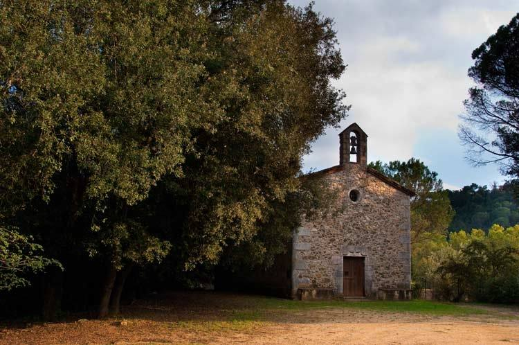

Visita · Gualba
Al costat del cementiri, a l'altra riba de la riera, l'ermita de Sant Cristòfol és un edifici d'una sola nau amb absis semicircular, decorat per fora amb arcuacions i lesenes llombardes. La…